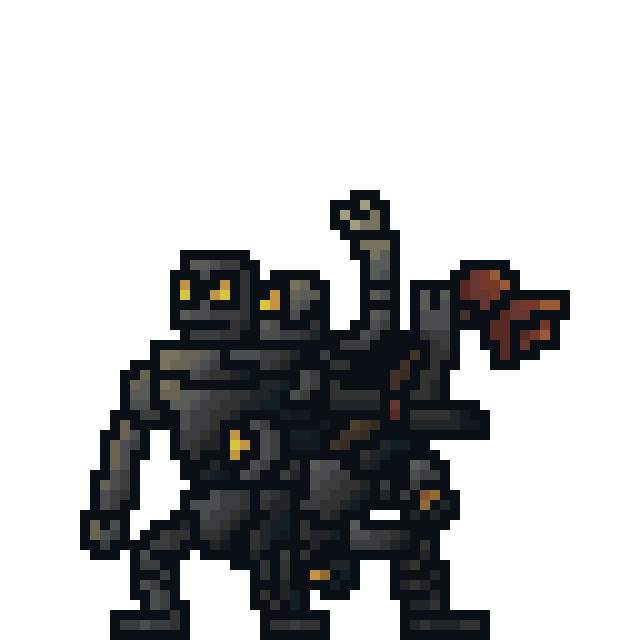
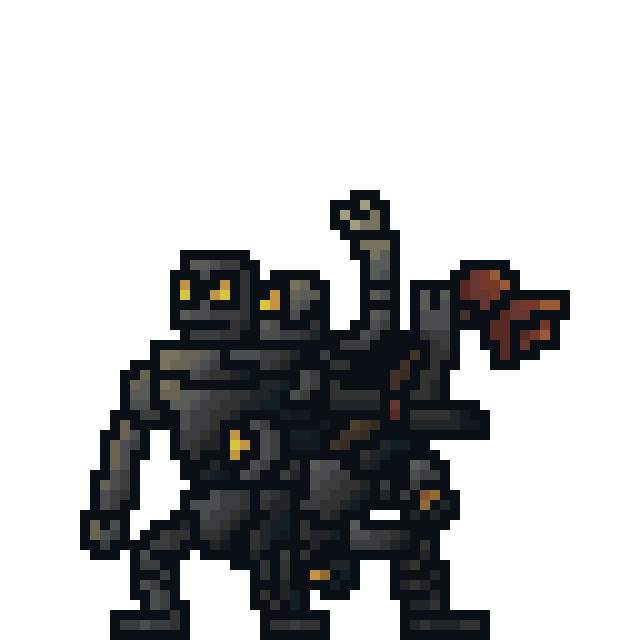

Hello and welcome to my portfolio!
I am a student at Purdue University aiming for a Game Development & Web Development double major with a English & Creative Writing double minor. My skills include C++, C# HTML, CSS, & JavaScript, Music Production, and Creative Writing.
Currently, I am a Game Designer and Programmer looking forward to revolutionize the game industry! I am versatile with my productivity as I focus on the scripting, prototyping, documenting, designing, narrative, and music production.
I'm currently in a student-lead studio called Scrap Metal Studios as a narrative designer and one of the founding members. Formed in March 2023, we are a Purdue Univesity-based student-led studio working on a 2.5D pixel art Unreal Engine game. Our project, Project: Dyscharged, is a voluntary passion project for all of us as we focus primarily on our coursework. We host weekly meetings and strong comfort vibes as the team develops the game on the side with strong chemistry.
I am still enthusiastically seeking opportunities to expand knowledge and skills through continuous learning and professional development initiatives. I only plan to fail forward in order to reach my dreams.
"Success is not the result of spontaneous combustion. You must set yourself on fire." - Arnold H. Glasow
Scrap Metal Studios: Project Dyscharged
Credit: Will Schonfield, Lead Artist of Scrap Metal Studios
 
